<title>Terepasztal Hill Climb</title>
<link rel="stylesheet" href="https://fonts.googleapis.com/css2?family=Archivo:wght@500;700&family=Atkinson+Hyperlegible:wght@400;700&family=IBM+Plex+Mono:wght@400;500&display=swap">
<style>
:root{--ground:#edf0ea;--panel:#f8faf6;--ink:#1c231f;--muted:#58645c;--line:#cdd5cc;--rail:#9a4f2c;--ok:#3f7a3a;
  font-family:"Atkinson Hyperlegible",system-ui,sans-serif;}
@media (prefers-color-scheme:dark){:root:not([data-theme="light"]){--ground:#141a16;--panel:#1b221d;--ink:#e3e9e2;--muted:#9aa79e;--line:#2e3831;--rail:#d98a5f;--ok:#7fbf73;color-scheme:dark}}
:root[data-theme="dark"]{--ground:#141a16;--panel:#1b221d;--ink:#e3e9e2;--muted:#9aa79e;--line:#2e3831;--rail:#d98a5f;--ok:#7fbf73;color-scheme:dark}
body{background:var(--ground);color:var(--ink);font-size:15px;line-height:1.55;padding-inline:clamp(16px,3vw,40px);padding-block:32px 64px}
main{max-width:1500px;margin:0 auto;display:grid;gap:48px}
h1,h2{font-family:Archivo,system-ui,sans-serif;text-wrap:balance;margin:0}
h1{font-size:30px;font-weight:700}
h2{font-size:21px;font-weight:700}
header,section{display:grid;gap:14px}
p{margin:0;max-width:72ch}
.muted{color:var(--muted)}
.mono{font-family:"IBM Plex Mono",ui-monospace,monospace;font-size:13px;font-variant-numeric:tabular-nums}
.grid{display:grid;gap:14px;grid-template-columns:repeat(auto-fit,minmax(min(100%,440px),1fr))}
.grid.three{grid-template-columns:repeat(auto-fit,minmax(min(100%,380px),1fr))}
figure{margin:0;display:grid;gap:6px;align-content:start}
figure img{width:100%;height:auto;display:block;border:1px solid var(--line);border-radius:3px;cursor:zoom-in}
figcaption{font-size:13.5px;color:var(--muted)}
figcaption b{color:var(--ink);font-weight:700}
.tag{font-family:"IBM Plex Mono",monospace;font-size:11.5px;letter-spacing:.06em;text-transform:uppercase;color:var(--rail)}
.status{display:grid;gap:6px;padding:14px 16px;background:var(--panel);border:1px solid var(--line);border-radius:4px}
.status li{margin:0}
.status ul{margin:0;padding-left:18px;display:grid;gap:4px}
.profile{display:flex;gap:3px;flex-wrap:wrap;align-items:flex-end}
.profile span{width:22px;background:var(--rail);opacity:.8;border-radius:2px 2px 0 0;display:flex;justify-content:center;align-items:flex-start;color:var(--panel);font-size:10px}
dialog{padding:0;border:0;background:transparent;max-width:98vw;max-height:98vh}
dialog img{max-width:98vw;max-height:96vh;display:block}
dialog::backdrop{background:rgba(0,0,0,.8)}
a{color:var(--rail)}
:focus-visible{outline:2px solid var(--rail);outline-offset:2px}
</style>
<main>
<header>
  <span class="tag">PR #20 · round 3</span>
  <h1>Hills, rails and climbing trains</h1>
  <p class="muted">Every image is the game's own renderer. Click an image for full size. Sections follow your numbering.</p>
  <div class="status">
    <ul>
      <li><b>Shipped:</b> shaded slope grass, levels 6% lighter each above ground, and snow by the tile's own biome (patches on 4 and full on 5 by default, taiga 3/4, desert 5/6).</li>
      <li><b>Shipped:</b> straights, crossings and class transitions can go on slopes. Curves and switches, high speed included, need smooth tiles unless a bridge platform supports them.</li>
      <li><b>Pilot, your call:</b> biome ground on mountain tops, and peaks painted from the terrain's rock and snow.</li>
    </ul>
  </div>
</header>

<section>
  <span class="tag">1 · Biome tops pilot</span>
  <h2>Mountain ground in the biome’s own colour</h2>
  <p class="muted">The whole area around the hills is switched to one biome at a time. The ground between the stones on mountain and rock tiles takes that biome’s default ground instead of plains grass, so desert tops are sand. Hills already used their biome’s ground; mountains were the exception. Shipped look otherwise, at zoom 1.</p>
  <div class="grid">
    <figure>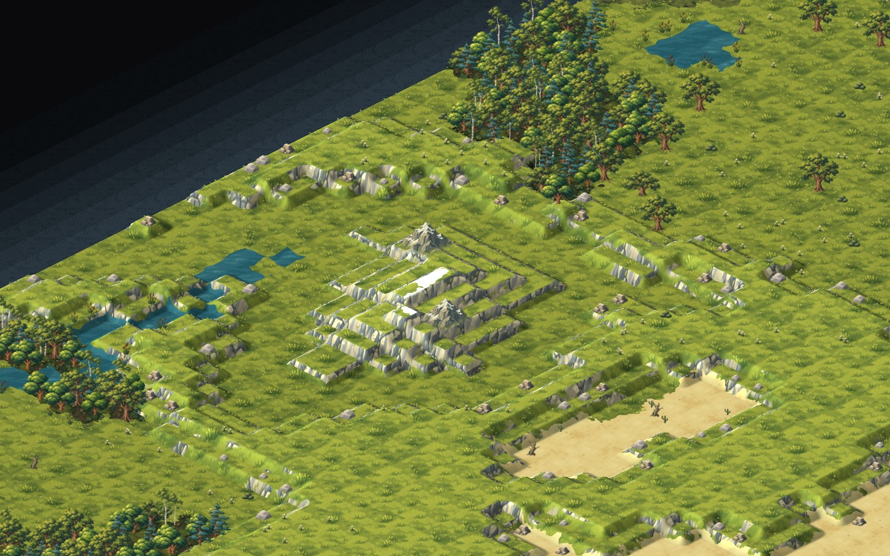<figcaption><b>Plains</b></figcaption></figure>
    <figure>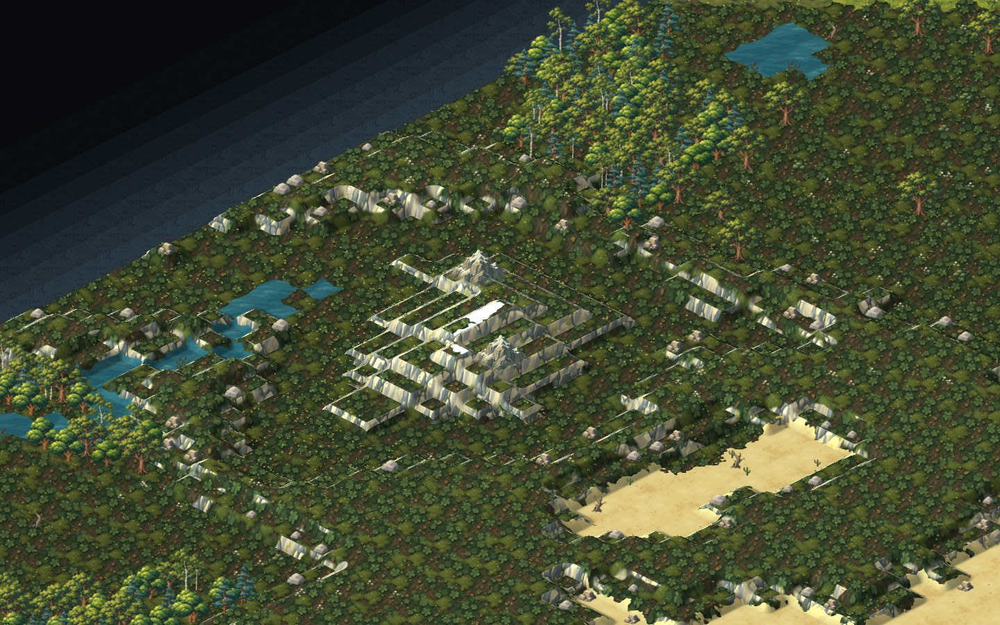<figcaption><b>Forest</b></figcaption></figure>
    <figure>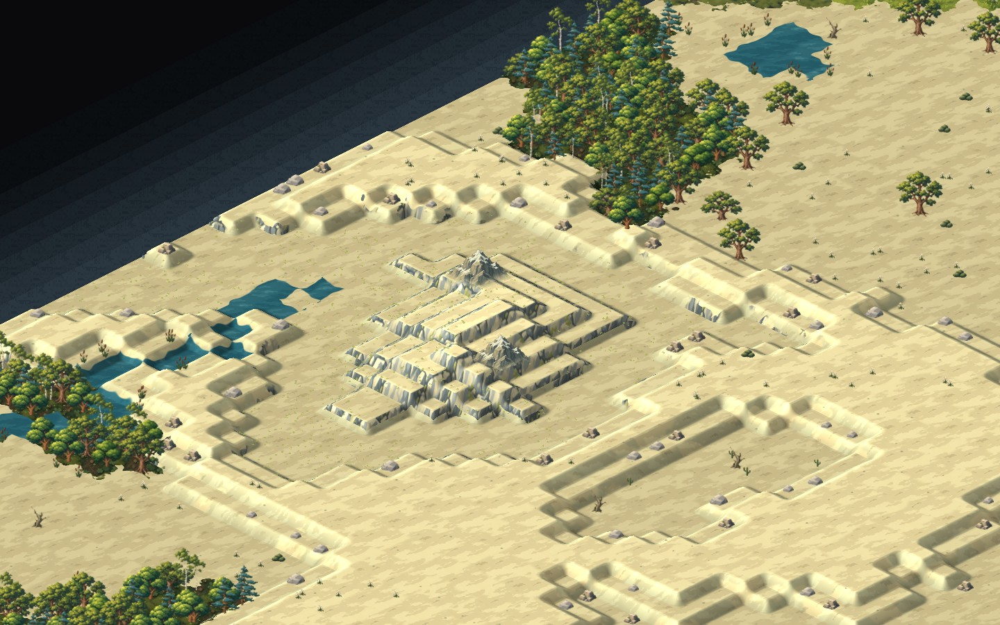<figcaption><b>Desert</b> · sand tops, never snow at these heights</figcaption></figure>
    <figure>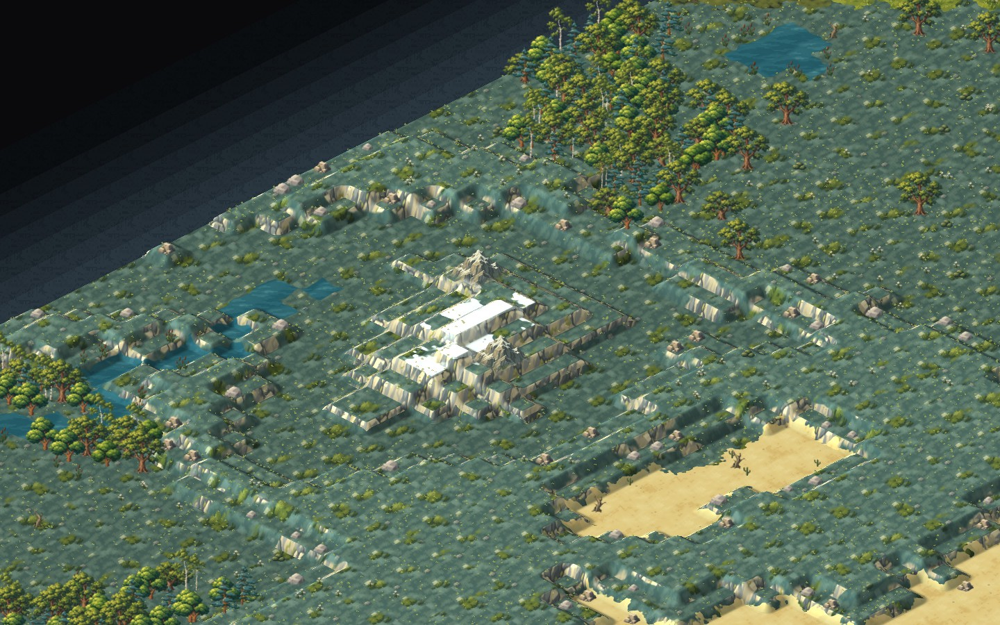<figcaption><b>Taiga</b> · snow patches on 3, full on 4</figcaption></figure>
    <figure>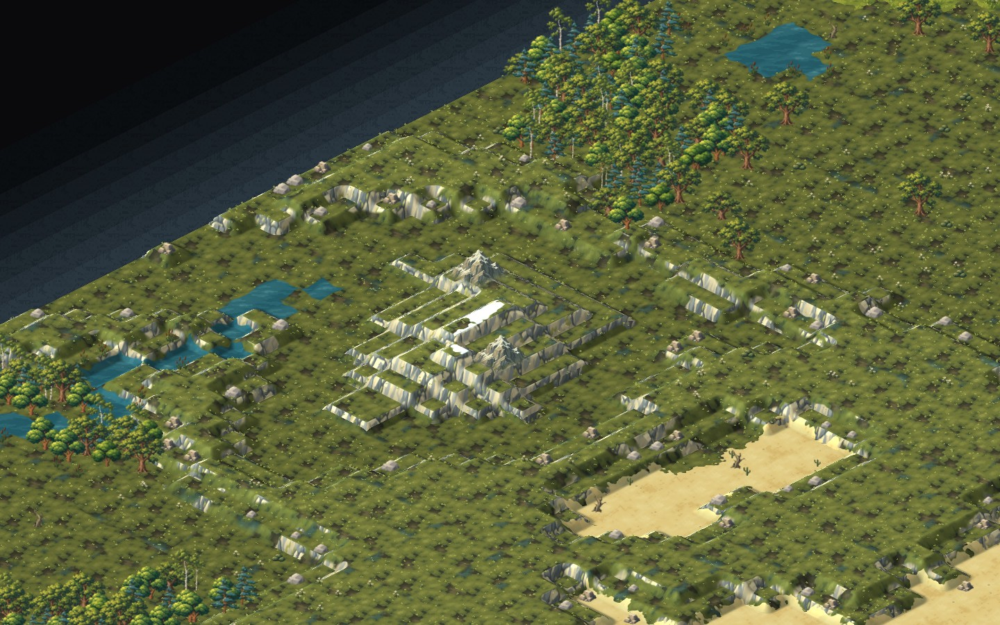<figcaption><b>Swamp</b></figcaption></figure>
  </div>
</section>

<section>
  <span class="tag">3 · Peaks</span>
  <h2>Peaks made of the same rock</h2>
  <p class="muted">Left: the illustrated summit sprites. Middle and right: summits painted by the terrain itself as ridged cones, rising two or three levels. They use the same rock as the banks, and the shipped snow rules cap them in snow because their tips sit above level 5.</p>
  <div class="grid">
    <figure>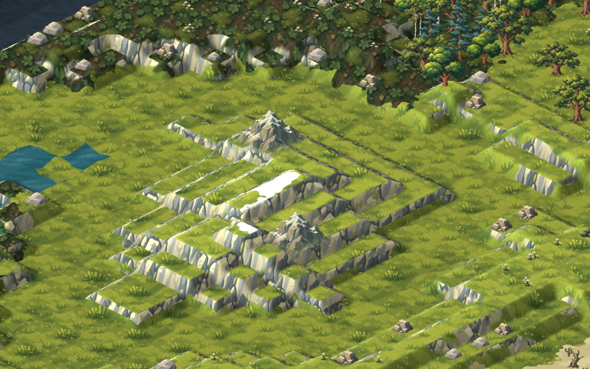<figcaption><b>Sprites</b> · zoom 2</figcaption></figure>
    <figure>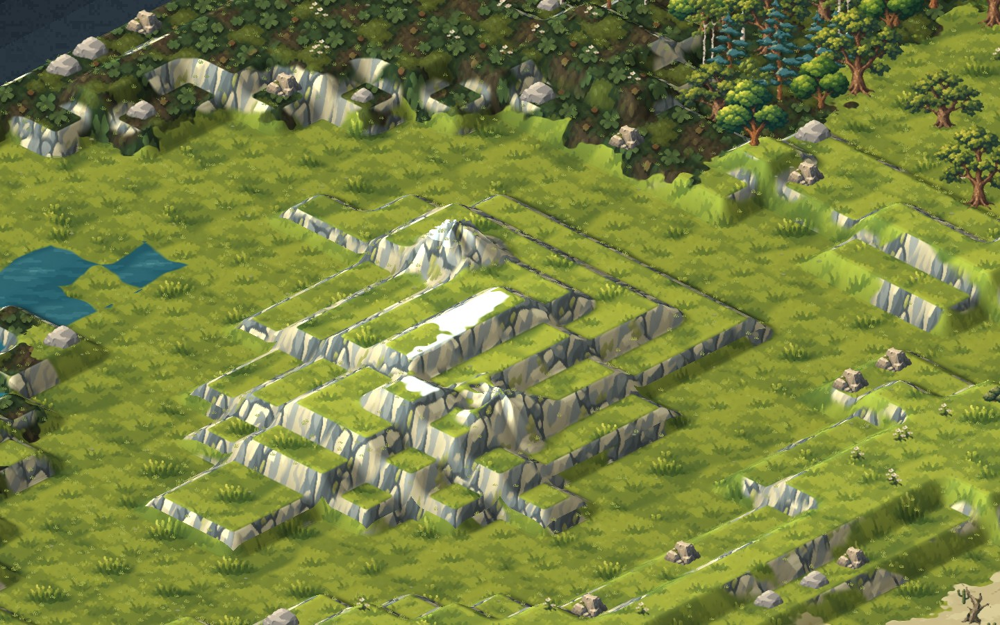<figcaption><b>Painted, 2 levels</b> · zoom 2</figcaption></figure>
    <figure>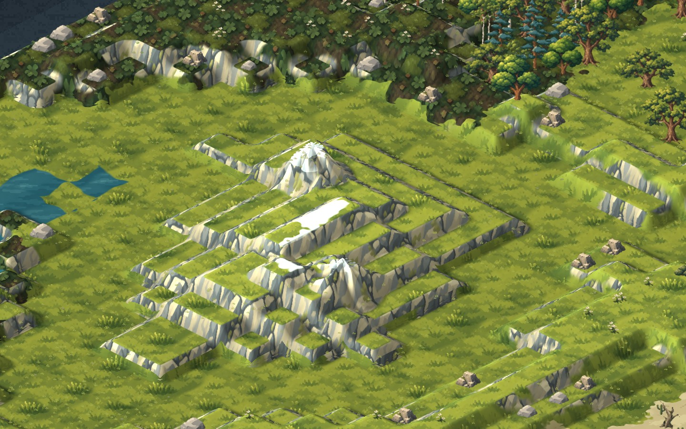<figcaption><b>Painted, 3 levels</b> · zoom 2</figcaption></figure>
    <figure>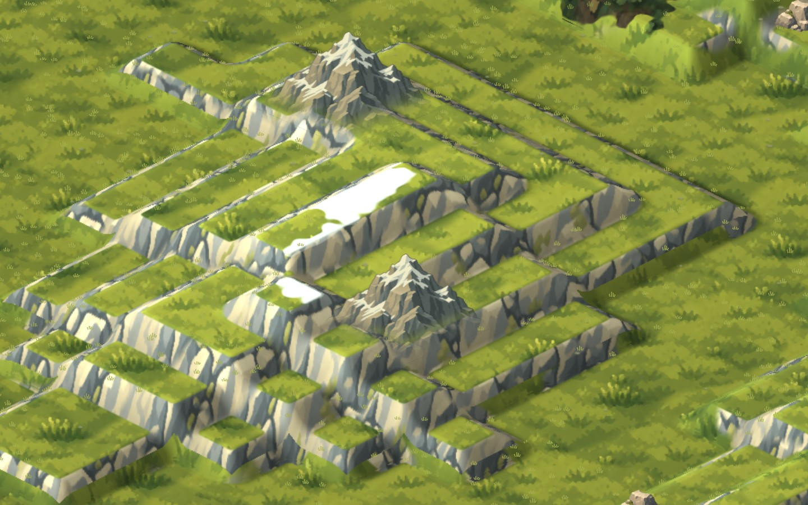<figcaption><b>Sprites</b> · zoom 3.2</figcaption></figure>
    <figure>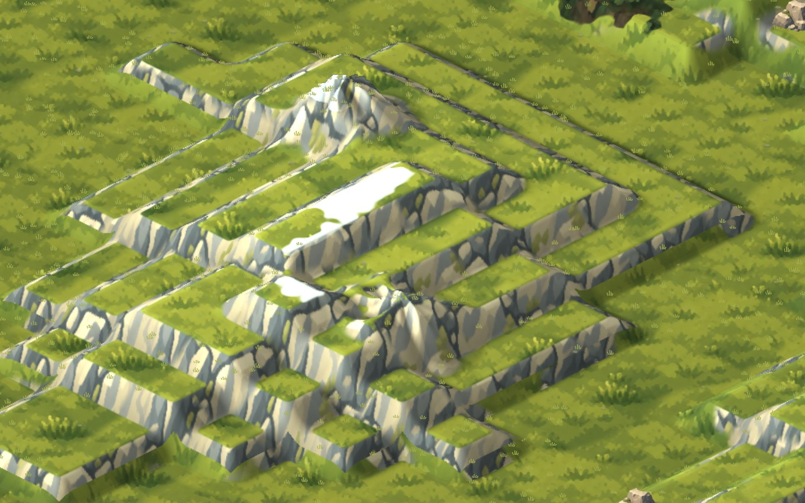<figcaption><b>Painted, 2 levels</b> · zoom 3.2</figcaption></figure>
    <figure>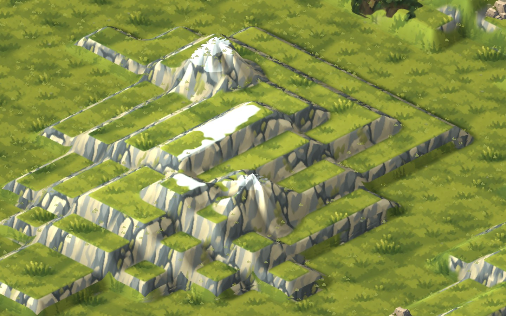<figcaption><b>Painted, 3 levels</b> · zoom 3.2</figcaption></figure>
  </div>
</section>

<section>
  <span class="tag">Rails · Placement rules</span>
  <h2>What may stand on a slope</h2>
  <p class="muted">The same site as your worked example. Every piece was tried with the game’s builder. Red ghosts are pieces the builder refused, shown where they were tried.</p>
  <div class="status"><ul>
      <li><b>Allowed:</b> Straight rail climbing the bank north-south (7 tiles)</li>
      <li><b>Allowed:</b> Crossing on a slope tile</li>
      <li><b>Refused:</b> Curve on a slope · “Curves and switches need smooth ground: only straights and crossings climb a slope, unless a bridge platform supports the piece”</li>
      <li><b>Refused:</b> Switch on a slope · “Curves and switches need smooth ground: only straights and crossings climb a slope, unless a bridge platform supports the piece”</li>
      <li><b>Allowed:</b> Switch on a smooth tile</li>
      <li><b>Allowed:</b> High-speed curve on smooth ground</li>
      <li><b>Refused:</b> High-speed curve on a slope · “Curves and switches need smooth ground: only straights and crossings climb a slope, unless a bridge platform supports the piece”</li>
      <li><b>Allowed:</b> Bridge platform on the slope</li>
      <li><b>Allowed:</b> Curve on the slope, supported by the bridge</li>
  </ul></div>
  <div class="grid">
    <figure>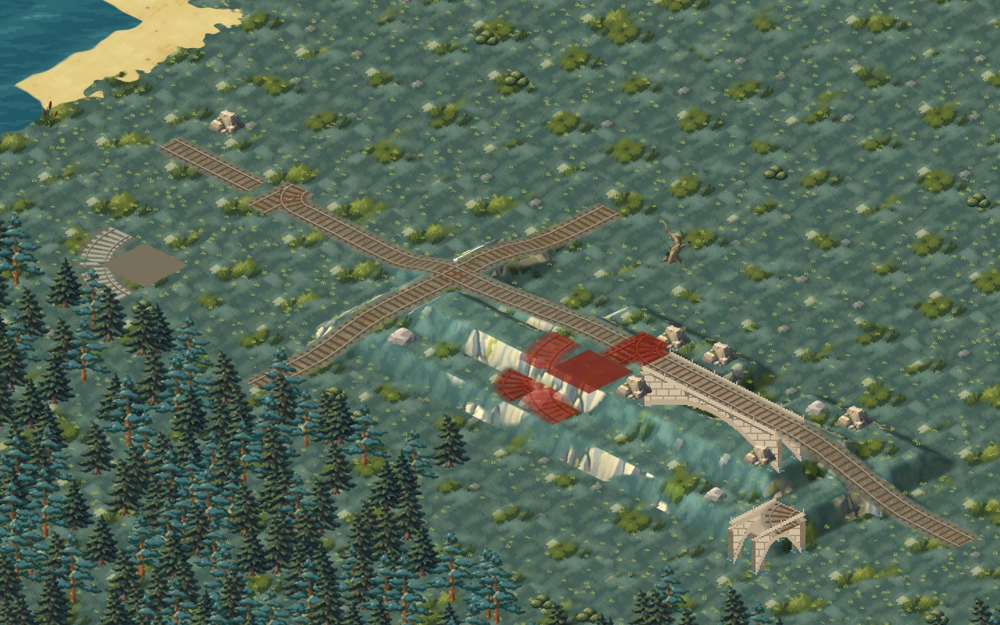<figcaption><b>The site</b> · zoom 2</figcaption></figure>
    <figure>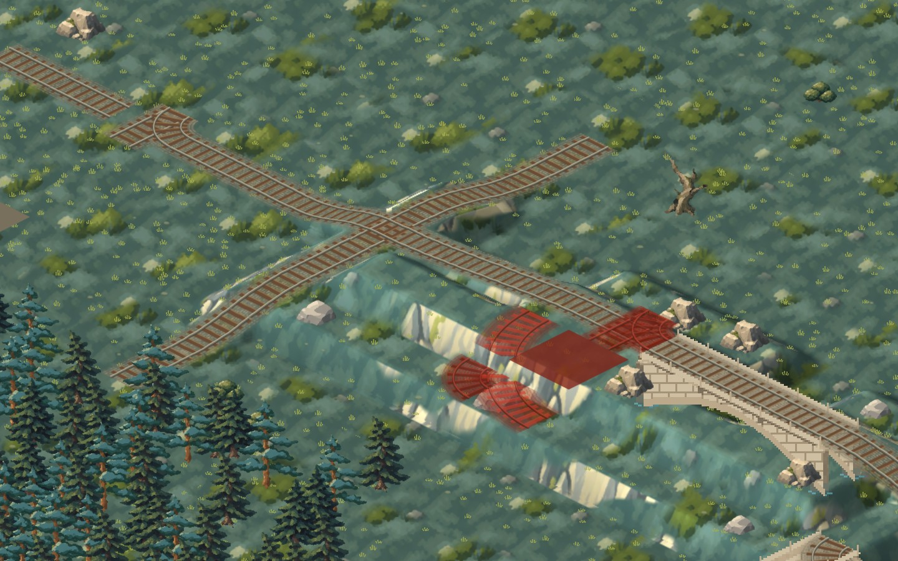<figcaption><b>Allowed and refused</b> · zoom 3</figcaption></figure>
    <figure>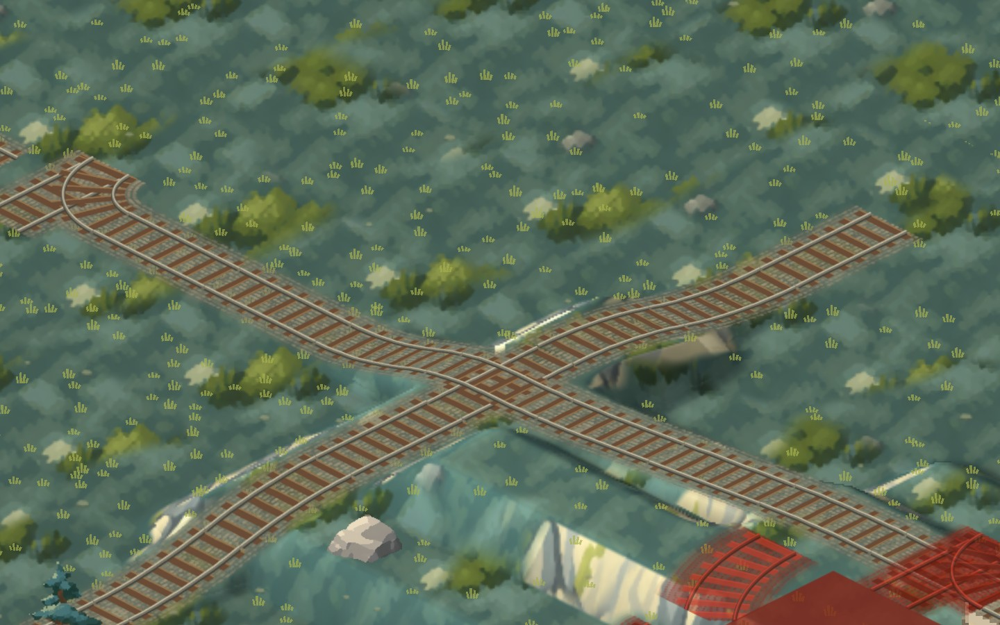<figcaption><b>Crossing on the slope</b> · both lines level at its centre · zoom 5</figcaption></figure>
    <figure>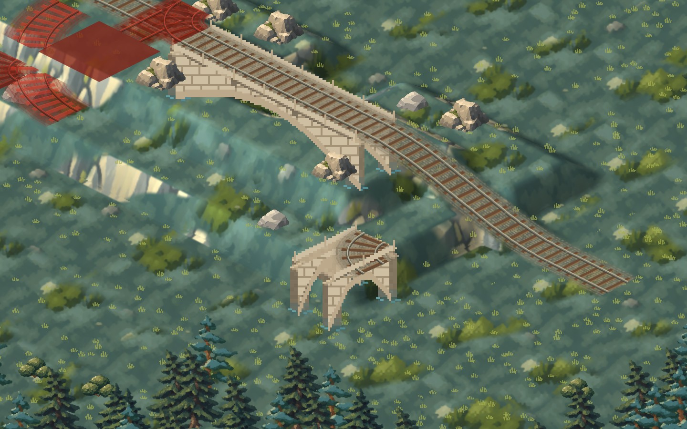<figcaption><b>Curve on the slope, on a bridge platform</b> · zoom 4</figcaption></figure>
  </div>
</section>

</main>
<dialog id="zoom"></dialog>
<script>
const d=document.getElementById('zoom'),im=d.querySelector('img');
document.querySelectorAll('figure img').forEach(i=>i.addEventListener('click',()=>{im.src=i.src;im.alt=i.alt;d.showModal();}));
d.addEventListener('click',()=>d.close());
</script>
